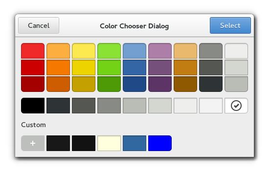

Gtk.ColorChooserDialog¶
Example¶

- Subclasses:
None
Methods¶
- Inherited:
Gtk.Dialog (14), Gtk.Window (119), Gtk.Bin (1), Gtk.Container (35), Gtk.Widget (278), GObject.Object (37), Gtk.Buildable (10), Gtk.ColorChooser (5)
- Structs:
Gtk.ContainerClass (5), Gtk.WidgetClass (12), GObject.ObjectClass (5)
class |
|
Virtual Methods¶
Properties¶
- Inherited:
Gtk.Dialog (1), Gtk.Window (33), Gtk.Container (3), Gtk.Widget (39), Gtk.ColorChooser (2)
Name |
Type |
Flags |
Short Description |
|---|---|---|---|
r/w |
Show editor |
Style Properties¶
- Inherited:
Signals¶
Fields¶
- Inherited:
Gtk.Dialog (2), Gtk.Window (5), Gtk.Container (4), Gtk.Widget (69), GObject.Object (1), Gtk.ColorChooser (1)
Name |
Type |
Access |
Description |
|---|---|---|---|
parent_instance |
r |
Class Details¶
- class Gtk.ColorChooserDialog(*args, **kwargs)¶
- Bases:
- Abstract:
No
- Structure:
The
Gtk.ColorChooserDialogwidget is a dialog for choosing a color. It implements theGtk.ColorChooserinterface.Added in version 3.4.
- classmethod new(title, parent)[source]¶
- Parameters:
- Returns:
a new
Gtk.ColorChooserDialog- Return type:
Creates a new
Gtk.ColorChooserDialog.Added in version 3.4.